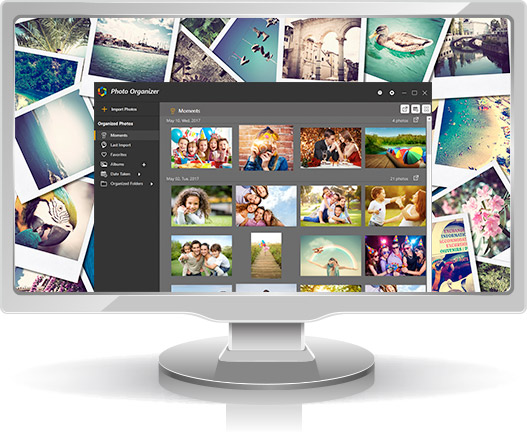
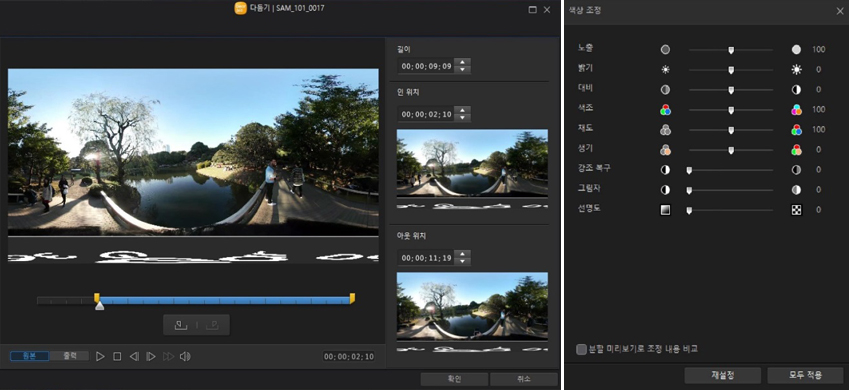
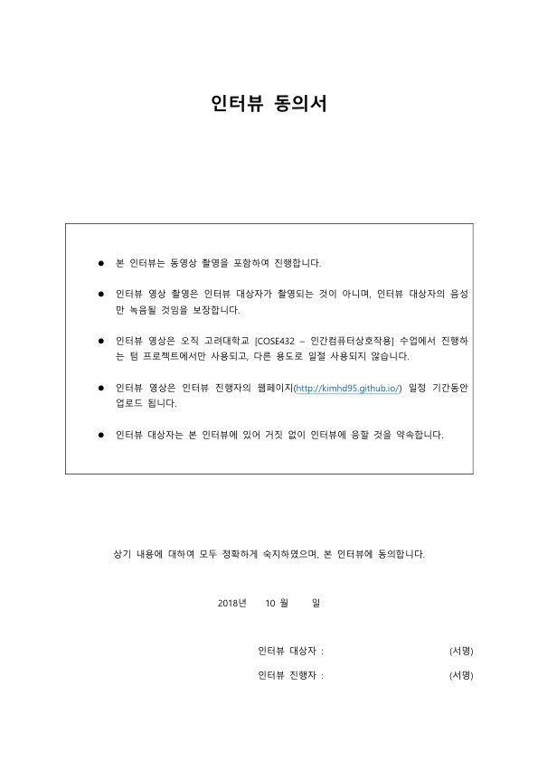

I. Requirement Analysis
1. Objective of the Application

사람들은 사진을 더 쉽게 편집하기 위해, 더 세밀하게 편집하기 위해, 또는 정리를 더 쉽게 하기 위해 Photo Organizer Application을 찾는다. Photo Organizer Application의 전반적인 목표는 사용자가 더욱 쉽게 사진을 편집/관리할 수 있는 플랫폼과 다양한 편집 도구를 제공하는 것이다. 따라서 ‘좋은’ Photo Organizer는 사용자들이 쉽게 적응할 수 있는 사진 편집 환경과 다양한 편집 기능을 지니고 있어야 한다. 이 프로그램은 특히 Novice Level의 사용자에게 초점을 맞춰 고안된 Photo Organizer Application이다. 이 프로그램은 친숙하고 이해하기 쉬운 User Interface를 통해 사용자가 기존의 다른 어플리케이션을 이용했을 때 보다 더욱 쉽게 사진을 관리하고 편집할 수 있도록 도와 주는 것을 목표로 한다.
2. Functional Requirements

Requirement #1:
Title: 사진 편집
Priority: 매우 높음
Description: 자르기, 회전, 필터링 등의 기본적인 편집 기능 뿐만 아니라 Lights, Exposure, Clarity 등을 세밀하게 설정할 수 있는 고급 편집 기능 등이 이에 해당한다. 더 나아가, 사진 자동 보정, 흔들림 보정 등의 최신기술을 적용한 편집 기능 또한 이에 포함될 수 있을 것이다. 이 기능은 Photo Organizer가 반드시 지녀야 하는 기능이므로 필수적으로 구현되어야 한다.
Precondition: 사진 불러오기 기능 지원
Postcondition: 사진 저장 기능 지원
Requirement #2:
Title: 사진 불러오기/저장
Priority: 매우 높음
Description: 편집할 사진을 선택해 불러오는 기능과 편집한 사진을 저장하는 기능. 사진 편집 기능이 제대로 작동하기 위해선 이 기능들이 필수적으로 제공되어야 한다.
Requirement #3:
Title: 사진 정렬
Priority: 높음
Description: 저장된 사진들을 정렬하는 기능. 이는 프로그램이 자동으로 날짜 순으로 정렬하고, 사용자가 원한다면 수동으로 원하는 기준(제목, 크기, 날짜, 태그 등)에 따라 사진들을 정렬할 수 있도록 도와줄 것이다.
Requirement #4:
Title: 사진 태그
Priority: 중간
Description: 사용자가 사진에 원하는 태그를 설정하여 태그에 따라 Organizing 할 수 있도록 지원하는 기능.
3. User Interface Requirements
(1) Functional UI Requirements
Requirement #1:
Title: 전체 사진/앨범 목록을 다양한 방식으로 보여주는 기능
Priority: 낮음
Description: 사용자가 직접 전체 사진/앨범 목록을 보여주는 방식(큰 아이콘/ 작은 아이콘/ 목록형 등)을 선택하고, 그에 맞게 View를 제공하는 기능.
Requirement #2:
Title: 사진 선택 시 자동 화면 맞춤 기능
Priority: 높음
Description: 사용자가 사진을 선택하면 해당 사진을 화면 크기에 맞춰 보여줌으로써 사용자는 사진을 더 편하고 자세하게 둘러보거나 편집할 수 있다.
(2) Non-functional UI Requirements
Requirement #1:
Title: 보기 쉬운 User Interface 사용
Priority: 중간
Description: 인터페이스가 텍스트 형식 또는 아이콘 형식으로만 제공된다면 유저는 Photo Organizer를 사용할 때 매우 복잡하고 어렵게 느껴질 것이다. 예를 들어, 사진 편집의 모든 세부적인 기능들(자르기, 회전, 명암 설정, 효과, Tint 설정 등)을 텍스트 형식의 인터페이스로만 제공한다면, 사용자들은 알아보기도 힘들 뿐만 아니라 프로그램이 매우 어렵고 딱딱하다고 느낄 것이다. 반대로 아이콘 형식으로만 제공된다면, 아이콘이 어떤 기능에 해당하는 지 전부 알기가 힘들기 때문에 원하는 기능을 찾으려면 여러 번의 시행착오를 겪어야 할 것이다. 따라서 텍스트 형식과 아이콘 형식을 균형 있게 사용하여 사용자들이 사용하기 쉽다는 느낌을 받을 수 있도록 보장해야 한다.
Requirement #2:
Title: 적절한 텍스트 크기/폰트 사용
Priority: 중간
Description: 적절한 크기와 폰트의 텍스트를 사용해 유저가 쉽게 텍스트를 읽을 수 있어야 한다. 텍스트 사이즈가 너무 작으면 유저가 글자를 읽기 힘들 것이고, 너무 크면 unbalance하게 보일 것이다. 텍스트 폰트의 경우 기본적인 폰트를 사용하면 유저가 글자를 알아보기는 문제가 없지만 딱딱하고 재미없게 느껴질 수 있다. 반대로 개성 있는 폰트를 채택하면 유저에게 딱딱하지 않은 긍정적인 느낌을 줄 수 있을 것이다. 다만 폰트의 개성이 글씨를 알아보기 힘들 정도로 지나치면 안될 것이다.
4. Other Considerations
(1) Usage Context
i. 스마트폰의 확산
오늘날 스마트폰의 보급이 엄청나게 증가하면서, 이제는 누구나 원할 때 스마트폰으로 손쉽게 사진을 찍을 수 있는 환경이 되었다. 젊은 사람들 뿐만 아니라 어린이나 노인들 또한 사진에 일상을 담는 것이 이상하지 않은 시대가 되었다. 스마트폰이 전통적인 카메라의 자리를 대체하면서, 사람들은 사진을 찍고 관리하는 것에 점점 친숙해지고, 이에 따라 사진 관리 프로그램에 대한 수요도 증가하고 있다.
ii. 사진 촬영 및 편집 기술의 발전
사진 촬영 기술이 발달하면서, 고가의 장비가 없는 사람들도 손쉽게 고화질의 사진을 찍을 수 있게 되었다. 또한 편집 기술의 발달로 사람들은 사진을 원하는 대로 손쉽게 사진을 편집할 수 있게 되었다.
iii. SNS의 확산
SNS의 발달로 인해 셀카를 찍고 일상을 공유하는 것이 유행처럼 번지면서, 단순히 사진을 분류하고 정리하는 것에서 찍은 사진을 예쁘게 편집하기 위해 Photo Organizer 프로그램을 찾는 사람들이 늘어나게 되었다.
(2) Target User Group
이 프로그램의 Target User Group은 Novice Level의 사용자들이다. 즉, Photo Organizer 자체를 처음 접해보거나 사용하는데 미숙한 사람들을 대상으로 한다.
(3) Platform
이 프로그램은 PC의 Window OS 환경과 Mobile Device의 Android 환경에서 사용하도록 고안되었다.
II. User Analysis
1. User Interviews
(1) 인터뷰 개요

(2) 인터뷰 참가 동의서
(3) 인터뷰 영상
2. Direct User Requirements
Requirement #1:
Title: 인물/동물 별 자동 분류 기능
Description: 얼굴 인식 및 사물 인식 기술을 바탕으로 사진에 있는 사람 얼굴 또는 동물을 인식해 어떤 인물/동물인지 판단하여 자동으로 분류해주는 기능
Requirement #2:
Title: SNS 자동 업로드
Description: 사진을 촬영하면 사용자에게 업로드 여부를 묻는 메시지를 띄우고, 사용자가 승인하면 자동으로 SNS에 업로드 해주는 기능
Requirement #3:
Title: 사진첩 테마 제공
Description: 사용자가 사진첩을 생성할 때 기본적으로 사용할 수 있는 사진첩 테마를 여러 개 제공한다.
Requirement #4:
Title: 장소/날짜 별 자동 분류
Description: 사진이 촬영된 장소 및 날짜에 따라 자동으로 분류하는 기능
3. Cognitive/Ergonomic Requirements
Requirement #1:
Title: 쉽다는 느낌을 주는 UI 제공
Description: 사용자에게 쉽게 느껴지도록 User Interface를 최대한 간단하게 구성한다.
Requirement #2:
Title: 사진에 집중할 수 있는 배경색 사용
Description: 사용자가 사진에 집중할 수 있도록 흰색이나 검은색 같은 기본적이고 튀지 않는 색을 배경색으로 채택한다.
4. Usage Scenarios
[시나리오 1]
1. 스마트폰 카메라로 셀카를 찍자 스마트폰 화면에 찍은 사진이 어떤 앨범에 저장되었는 지 알려주는 메세지가 표시된다. (Background로 실행중인 상태)
2. 표시된 메세지를 터치하여 Photo Organizer Application을 실행시킨다.
3. 앱에서 '최근 추가된 사진' 탭에서 방금 찍은 사진을 선택하여 전체 화면으로 띄운다.
4. 사진 편집 아이콘을 클릭하고 얼굴 인식 버튼을 누르자, 앱이 자동으로 얼굴을 인식하고, 뷰티 효과를 선택하여 사진을 편집한다.
5. 편집한 사진을 저장하자, 원본 사진을 저장할 것인지 묻는 메세지가 표시된다.
6. 메세지에서 ‘아니오’를 선택하고 SNS 업로드 아이콘을 터치하자 스마트폰 화면에 성공적으로 업로드가 완료됐다는 메세지가 표시된다.
7. 홈 버튼을 눌러 어플리케이션을 종료한다.
[시나리오 2]
1. 웹에서 연예인 사진을 다운받자 컴퓨터 화면에 사진이 추가되었다는 팝업창이 표시된다. (Background로 실행중인 상태)
2. 팝업창을 클릭하여 Photo Organizer Application을 실행한다.
3. '최근 추가된 사진' 목록에서 방금 저장한 사진을 선택하여 전체 화면으로 띄운다.
4. 인물분류 버튼을 클릭하자 프로그램이 인물을 파악하여 인물정보를 사진파일에 자동으로 tagging한다. (다운받은 사진 속 인물이 이전에 저장했던 인물이라고 가정)
5. 프로그램을 다시 백그라운드로 돌리고 웹 서핑을 계속한다.
5. Interaction Model
Task Model #1: 새로운 사진첩 추가
[Action Sequence]
1. 아이콘을 클릭하여 프로그램을 실행시킨다.
2. 사진첩 생성 버튼을 클릭한다.
3. 사진첩 테마를 적용할 건지 묻는 창에서 ‘예’를 선택한다.
4. 적용할 테마를 선택한다.
5. 사진첩 이름을 입력한다.
6. 사진첩 추가 버튼을 클릭한다.
Task Model #2: 인물사진을 선택해 뷰티 효과 적용
[Action Sequence]
1. 아이콘을 클릭하여 프로그램을 실행시킨다.
2. 사진 목록에서 편집할 인물 사진을 선택한다.
3. 편집 버튼을 클릭한다.
4. 얼굴에 뷰티 효과를 적용하기 위해 얼굴 인식 버튼을 클릭한다.
5. 편집 도구 중 뷰티 효과에 해당하는 아이콘을 클릭한다.
6. 뷰티 효과 종류를 선택한다.
7. 편집 완료 버튼을 누른다.
8. 저장하기 버튼을 누른다.
9. 편집한 사진을 저장할 사진첩을 선택한다.